Safer operations.
Smarter decisions.
Integrated AI Security, Monitoring & Intelligence Platform
WEB · DESKTOP · MOBILE · AI CORE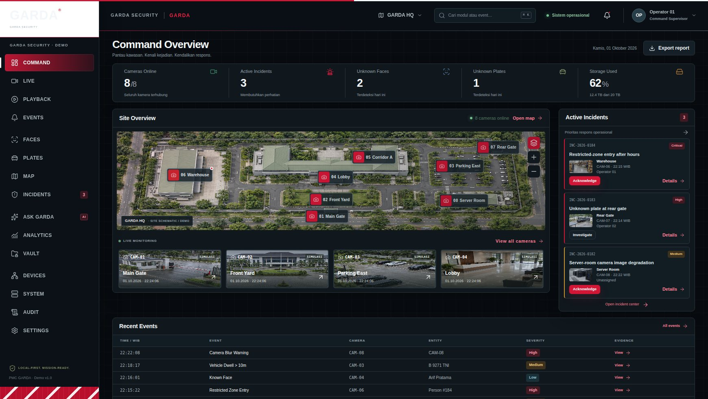

COMMAND OVERVIEW
Pusat Kendali Keamanan
Satu dashboard untuk situasi kawasan, alarm, kejadian, kamera, dan respons operator.
LIVE MONITORING
Video Wall Multi-Kamera
Pemantauan beberapa saluran CCTV dalam satu antarmuka. Dukungan perangkat tetap harus divalidasi.
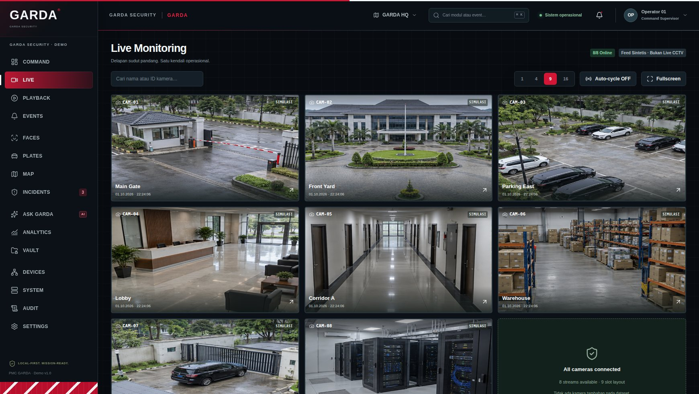
VIDEO PLAYBACK
Penelusuran Rekaman
Alur pencarian dan peninjauan cuplikan berdasarkan kamera dan waktu pada demonstrasi aplikasi.
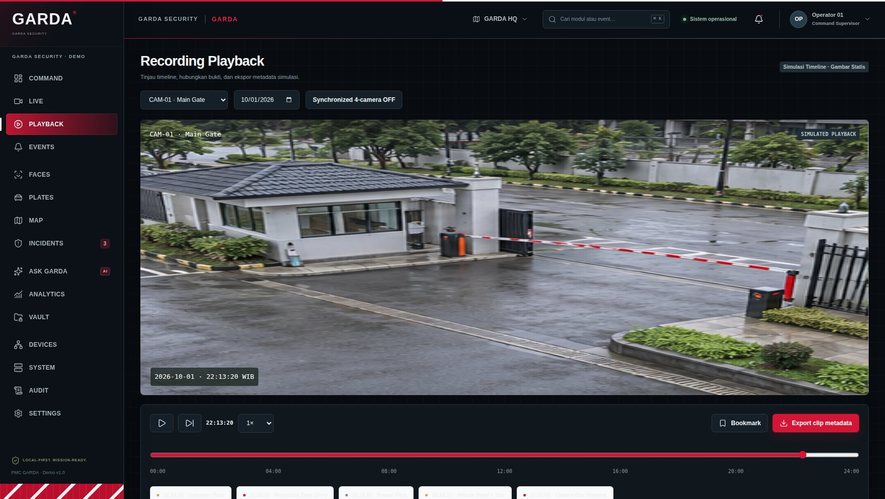
EVENT MONITORING
Deteksi dan Aktivitas
Daftar aktivitas yang dapat difilter, ditinjau, dan ditautkan ke catatan kejadian.
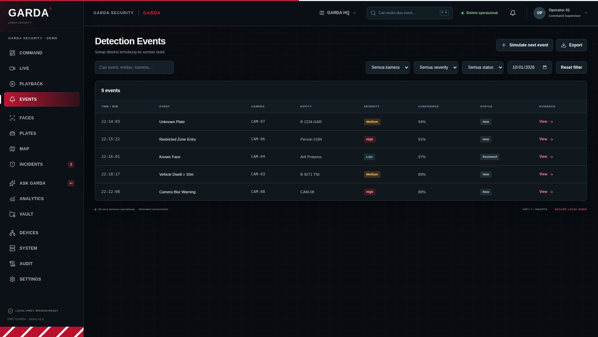
FACE INTELLIGENCE
Analitik Wajah
Antarmuka observasi wajah untuk alur verifikasi. Identifikasi biometrik merupakan fitur terkontrol dan belum siap produksi.
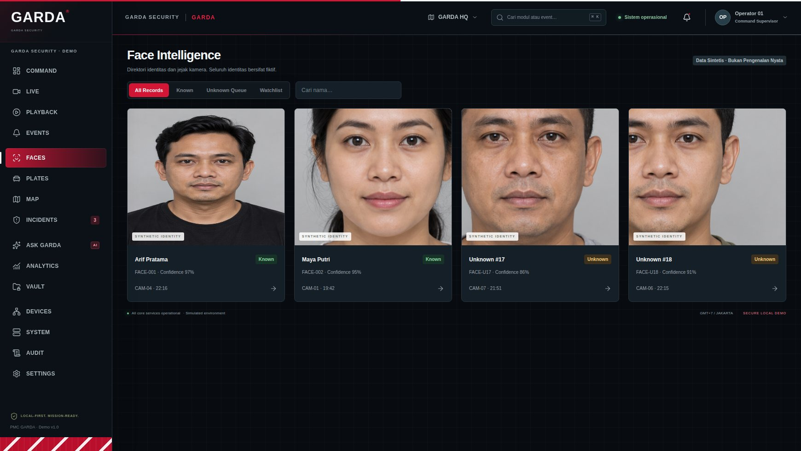
LICENSE PLATE INTELLIGENCE
Analitik Pelat Nomor
Riwayat kandidat OCR pelat, citra pendukung, dan penelusuran kejadian berbasis lokasi dan waktu.
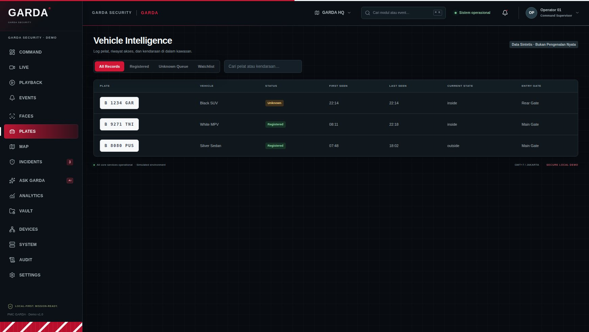
SITE INTELLIGENCE
Peta dan Titik Kamera
Antarmuka visualisasi lokasi dan penempatan perangkat untuk membantu operator memahami situasi.
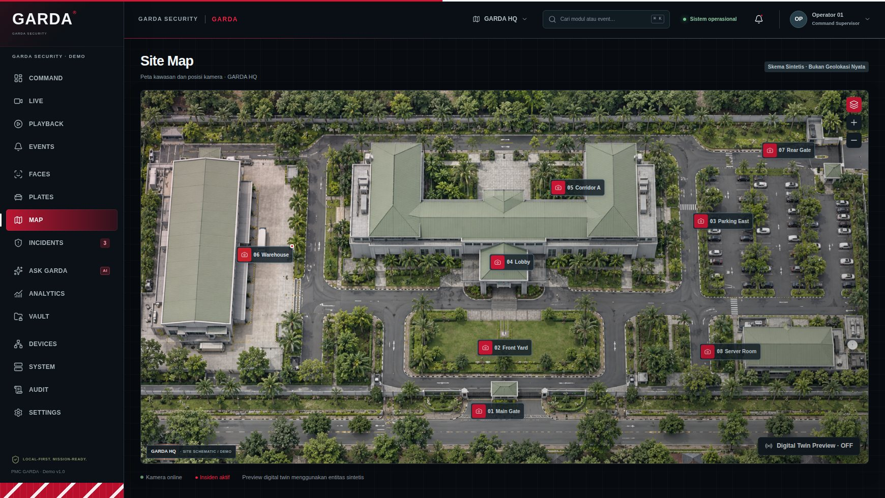
INCIDENT COMMAND
Manajemen Insiden
Siklus penanganan kejadian mulai dari pencatatan, penugasan, bukti, hingga penyelesaian.
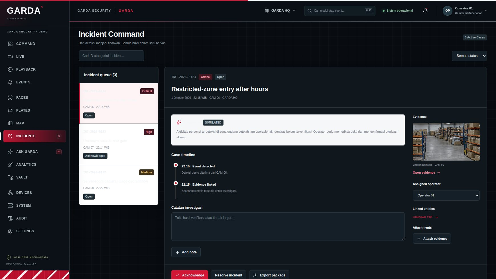
ASK GARDA
Investigasi Berbasis Bahasa
Konsep pertanyaan operasional dan penelusuran bukti. Jawaban pada demo saat ini bersifat deterministik.
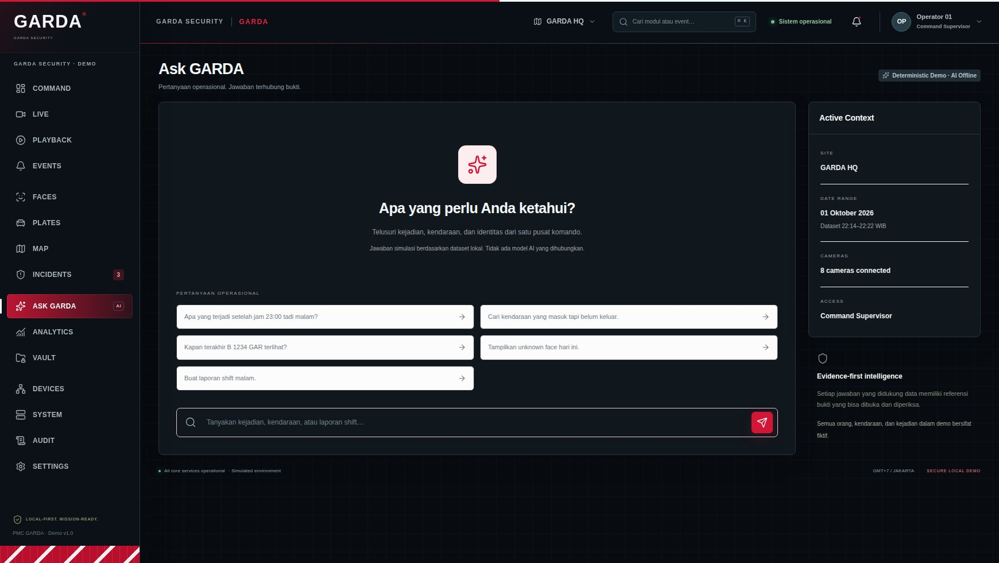
SECURITY ANALYTICS
Analitik Operasional
Antarmuka pemantauan tren dan ringkasan peristiwa untuk membantu evaluasi keamanan.
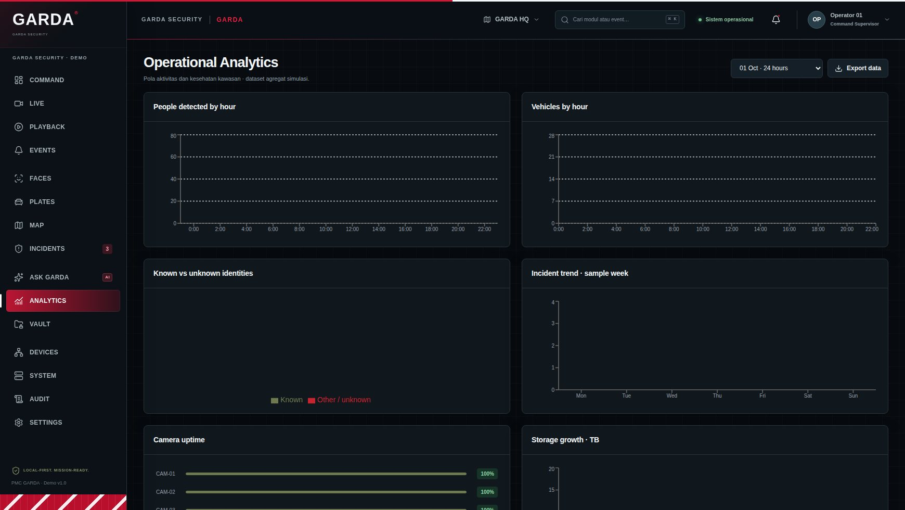
GARDA VAULT
Pengelolaan Bukti Digital
Ruang kerja pengarsipan bukti, metadata, kategori, dan alur akses; implementasi penyimpanan produksi masih dikembangkan.
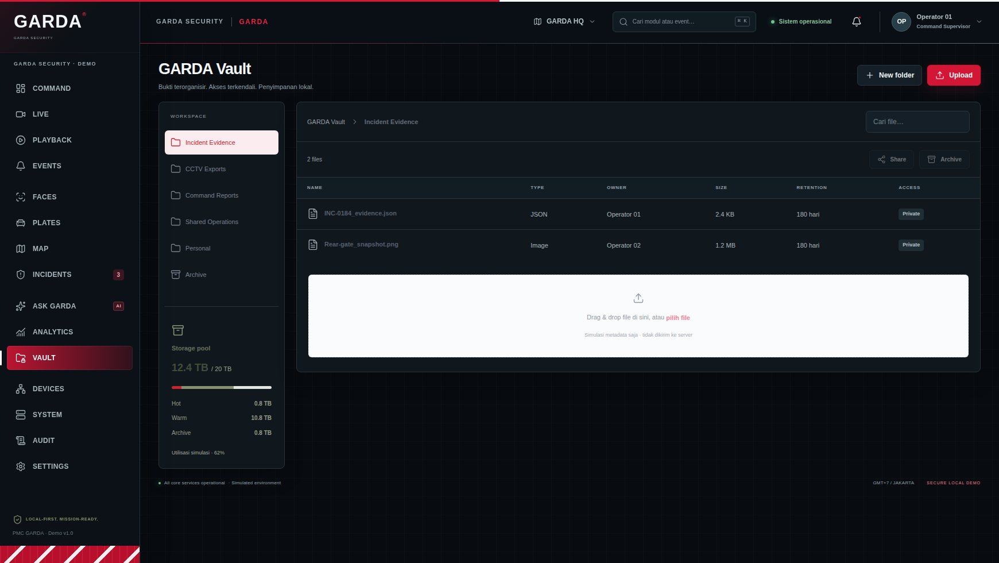
DEVICE MANAGEMENT
Inventaris CCTV dan Jaringan
Antarmuka registrasi, status, dan pemantauan perangkat untuk operasional berbagai merek CCTV.
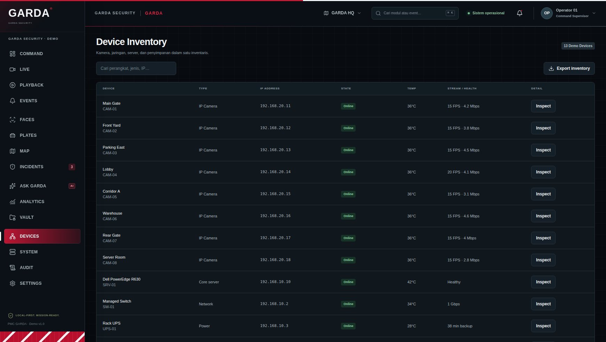
SYSTEM HEALTH
Observabilitas Infrastruktur
Tampilan status server, penyimpanan, layanan, dan kebutuhan pemeliharaan.
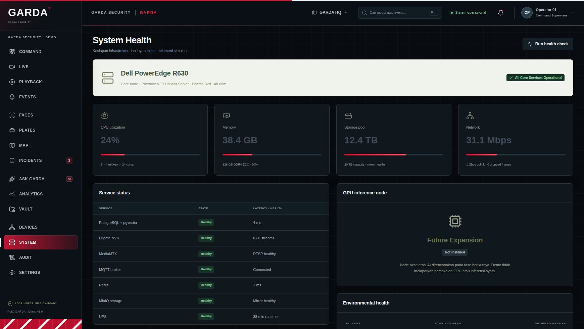
AUDIT & TRACEABILITY
Transparansi Operasional
Riwayat perubahan dan tindakan operator untuk mendukung akuntabilitas sistem.
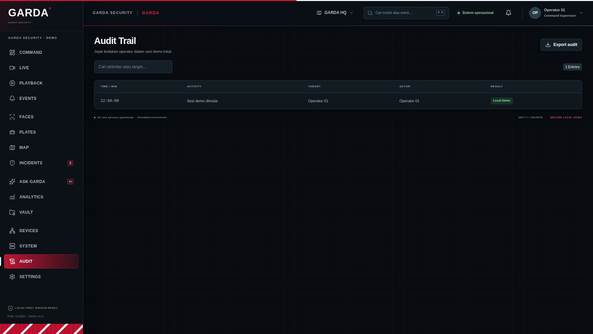
CONFIGURATION
Administrasi GARDA
Pengaturan sistem, preferensi dan jalur pengelolaan pengguna. Perizinan di UI demo belum sama dengan RBAC produksi.
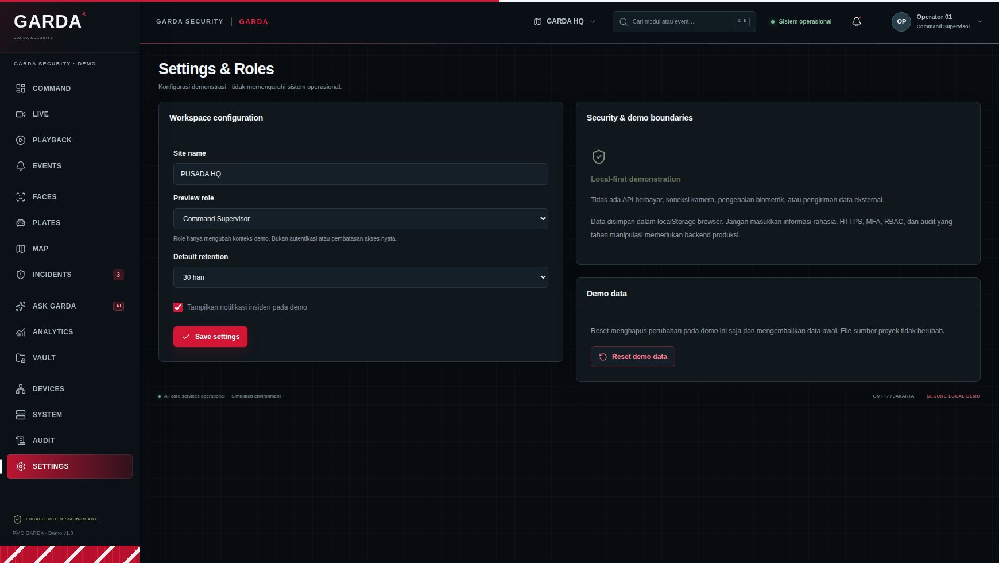
SECURITY,
IN YOUR HAND.
Mobile-first Command Experience
Desain konsep aplikasi GARDA Security untuk akses ringkas ke kamera, kejadian, status lokasi, dan pencarian berbantuan AI.
One platform.
Four growth stages.
Dari monitoring satu lokasi menuju ekosistem keamanan terintegrasi.
BASIC
CCTV, recording, live monitoring, evidence, dan AI Lite.
SMART
Analitik lanjutan, alarm, rule engine, dan pengenalan berizin.
INTELLIGENCE
Investigasi lintas kamera, pencarian semantik, dan Ask GARDA.
COMMAND
Federasi lokasi, GIS, integrasi dan kendali hierarkis.
Built around
data ownership.
Arsitektur modular untuk pengolahan video dan kejadian secara lokal.
CAMERAS
ONVIF/RTSP, konektivitas lokal dan interoperabilitas teruji.
RECORDING
Media gateway, perekaman lokal dan NVR independen.
AI CORE
Analitik kejadian pada server CPU/GPU lokal.
CLIENTS
Web Monitoring Center, Desktop, dan mobile dengan otorisasi.